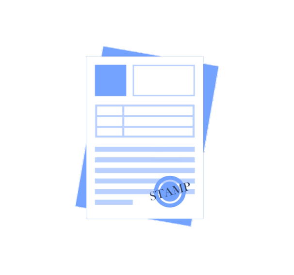

CURSO 2024/2025 -- DAW 1 -- I.E.S. LOS SAUCES
Menu
Gonzalo Junquera Lorenzo
Enlaces
Entornos de desarrollo
Mi trabajo
Documentos

01. Herramientas utilizadas en DAW
02. Ejemplo de uso NetBeans
03. Diagrama de clases ETT
Más proximamente